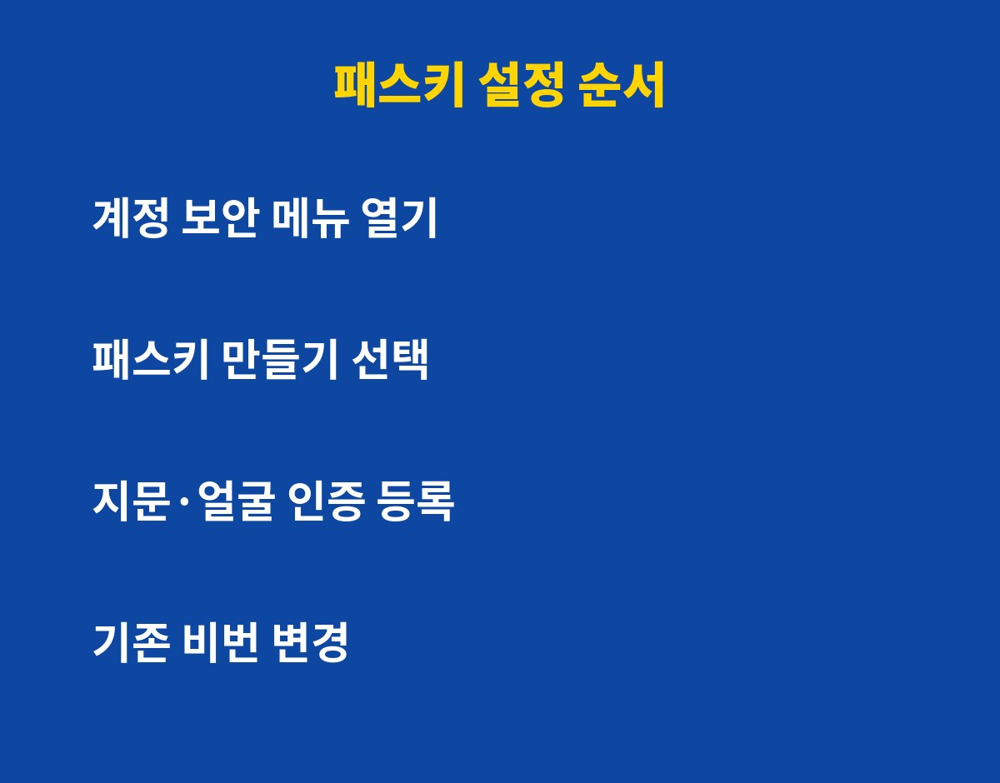

패스키를 아직 안 쓰고 비밀번호만 입력하고 있다면, 계정이 털릴 위험을 그대로 안고 있는 거예요. 지문 한 번이면 끝나는데 왜 다들 안 바꿀까요?
패스키는 비밀번호 대신 쓰는 새로운 로그인 방식이에요. 스마트폰에 저장된 암호 키와 지문·얼굴·화면 잠금으로 본인을 확인해요. 사이트에는 비밀번호 자체가 전달되지 않아서, 사이트가 해킹당해도 내 비밀번호가 새어 나갈 일이 없어요.
구글, 애플, 마이크로소프트 같은 큰 회사들이 이미 지원하고 있고, 국내 서비스도 하나둘 도입하는 중이에요. 다만 서비스마다 지원 여부가 달라서 직접 확인해 보셔야 해요.
가장 큰 이유는 피싱이 통하지 않는다는 점이에요. 가짜 사이트에 접속하면 패스키는 애초에 작동하지 않아요. 진짜 주소에서만 인증이 되기 때문이에요. 비밀번호는 속아서 입력하면 끝이지만, 패스키는 속을 수가 없어요.

또 여러 사이트에서 같은 비밀번호를 돌려 쓰다가 한 곳이 뚫리면 줄줄이 털리는 사고도 막아줘요. 사이트마다 다른 키가 따로 만들어지기 때문이에요.
| 구분 | 비밀번호 | 패스키 |
|---|---|---|
| 로그인 방법 | 글자 직접 입력 | 지문·얼굴·화면 잠금 |
| 피싱 위험 | 속아서 입력하면 유출 | 가짜 사이트에서 작동 안 함 |
| 서버 유출 시 | 비밀번호 노출 가능 | 비밀번호 자체가 없음 |
| 기억 부담 | 외워야 함 | 외울 필요 없음 |
구글 계정을 예로 들면 계정 관리의 보안 메뉴에서 패스키 항목을 찾아 만들기를 누르면 돼요. 이후 화면 안내대로 지문이나 얼굴을 인증하면 끝이에요. 1~3분이면 충분해요.
설정할 때 꼭 지켜야 할 게 있어요. 첫째, 폰 화면 잠금을 반드시 걸어두세요. 패스키의 열쇠는 결국 폰이니까요. 둘째, 폰을 바꿀 때를 대비해 구글이나 애플 계정의 동기화를 켜두세요. 셋째, 패스키를 만들었어도 복구용 수단은 따로 챙겨두세요. 그래야 폰을 잃어버려도 당황하지 않아요.
처음엔 낯설지만 한 번 써 보면 비밀번호로 돌아가기 어려울 만큼 편해요. 가장 중요한 이메일 계정과 결제가 걸린 계정부터 먼저 바꿔보세요. 하나씩 늘려가면 어느새 비밀번호를 칠 일이 거의 없어질 거예요.
도움이 됐다면 구독해 두세요. 내 계정을 지키는 IT 꿀팁을 계속 알려드릴게요.
기사·공식 발표 기준이며 출시·가격 정보는 바뀔 수 있어요.